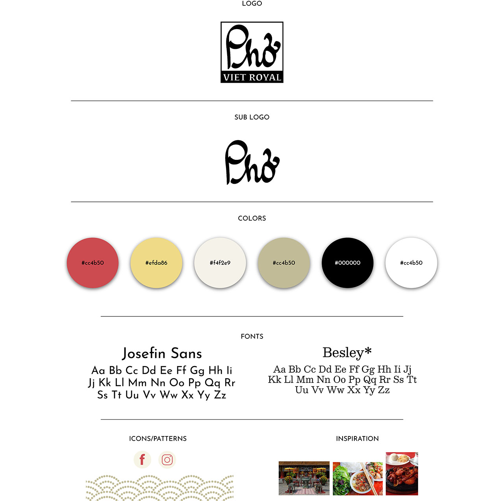

 RESUME
RESUME
UX
Branding
Art Direction
Photography
Videography
HTML, CSS, JavaScript
Adobe Illustrator
Adobe Photoshop
Adobe Premiere Pro
Pho Viet Royal is a Vietnamese restaurant specializing in all types of noodle soups and rice dishes. Although the restaurant serves delicious food and has a great atmosphere, its website does not convey this to the viewer.
For Pho Viet Royal’s website redesign, the primary goal was to give potential customers a visual depiction of the restaurant’s food and atmosphere by carefully choosing fonts, colors, and patterns as well as displaying a video reel of the restaurant and photos of its actual food.
Aside from aesthetic changes, usability was also improved with easy navigation and a simple and organized menu.